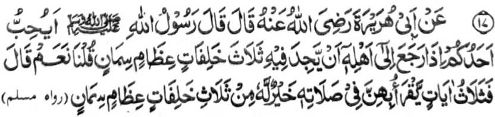

Miyakathitayan ko Abu Hurairah (Radhiallaho ‘Anho) a pitharo iyan a pitharo o Rasulollah (Sallallaho ‘Alaihi wa Sallam), “Ino ba kabaya o isa rekano a amay ka maling ko manga ta-alok rekaniyan na aya kaoma-an niyan ro-o na telo a manga o-ogat, go manga ka-olit a babay a onta?” Pitharo ami, “Oway.” Pitharo iyan, “So telo a Ayaat sa Qur’an a batiya-an o isa rekano ko Sambayang iyan na taralebi rekaniyan a di so telo a manga o-ogat, go manga ka-olit a babay a onta.”
Aden a lagida-i a osayan a miniropa si-i ko Hadith a ika 3. Si-i sangka-iya Hadith na aden a inaloy ron a osayan ko kapembatiya-a ko Qur’an si-i ko Sambayang a taralebi a di so kapembatiya-a on igira kena ba kazambayang. Giya-i sabap a aya kiniropa-an non na inilagid sa maogat a babay a onta.
Aya sabapa-i na, si-i ko isa a sabap, na mitotoro iyan so dowa a kalbihan: so Sambayang ago so kabatiya, na si-i ko ika dowa sabap na aya miya-aloy ron na dowa a nganin: so kababaloy niyan a babay a onta ago so kaogat iyan. Miya-aloy si-i ko soled o Hadith a ika 3 a so manga Hadith a lagida-i na pantag bo sa abaya-bayan, ka so tani-tiyasa a balas o isa bo a Ayaat na mala-i arga a di so nggibo-nggibo a manga babay a onta a palayaden phatay.